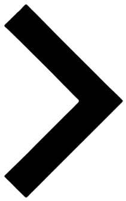

<ion-header [translucent]="true">
  <ion-toolbar>
    <ion-title class="page-title">Choix du domaine</ion-title>
      
  </ion-toolbar>
</ion-header>
<!-- @if (showFadeTop) {
  <div class="fade-on-header"></div>
} -->

<ion-content [fullscreen]="true" id="pagedomains" > <!-- (ionScroll)="onScroll($event)"-->


  <!-- @if (showFadeTop) {
    <div class="scroll-fade-top"></div>
  } -->

  <div class="sector-container">
    <div class="sector-text">Ma filière : {{sector}}</div>
    <div class="sector-button">
      <ion-button id="sector-switcher" (click)="goToSectors()">Changer de filière</ion-button>
    </div>
  </div>

  <ion-list id="list_domains">
    @for(domain of domains; track $index) {
      @if(domain.isRelevant) {
        <ion-item lines="none" class="item_list_domains">
          <button class="button_list_domains" (pointerdown)="handlePress($event, domain)" (click)="goToChapters(domain.domainId, domain.name)">
            <div class="color-dot" [style.background-color]="'var(' + takeBgColor(domain.domainId) + ')'"></div>
            <label class="label-domain">{{ domain.name }}</label>
          
            @if (!isWideScreen) {
              
            }
          </button>
        </ion-item>
      }
    }
  </ion-list>

  

  <!-- @if (showFadeBottom) {
    <div class="scroll-fade-bottom"></div>
  } -->
</ion-content>

<ion-footer>
  <ion-toolbar>
    <app-navbar/>
  </ion-toolbar>
    <!-- @if (showFadeBottom) {
      <div class="fade-on-footer"></div>
    } -->
</ion-footer>